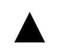

1.SVG介绍
矢量图形是计算机图形学中用点、直线或者多边形等基于数学方程的几何图元表示图像。位图（Bitmap），又称栅格图或点阵图，是使用像素阵列来表示的图像。相比位图，矢量图有如下优点：
- 矢量图是用点和线来描述图形，所以文件会比较小，同时也能提供高清晰的画面。
- 矢量图缩放自由且不会失真，完全适配于任何分辨率的屏幕。
SVG (Scalable Vector Graphics, 可伸缩矢量图形) 是W3C 推出的一种开放标准的文本式矢量图形描述语言,他是基于XML的、专门为网络而设计的图像格式，SVG是一种采用XML来描述二维图形的语言。了解更多SVG相关的语法可以参考W3School的教程http://www.w3school.com.cn/svg/svg_path.asp。这里我们重点说明一下SVG的路径。
SVG使用<path>标签来定义路径，可用于路径的命令包括入下：
- M = moveto 移动起始点
- L = lineto 用于画线
- H = horizontal lineto 用于画水平线
- V = vertical lineto用于画竖直线
- C = curveto 三次贝塞尔曲线
- S = smooth curveto 同样三次贝塞尔曲线，更平滑
- Q = quadratic Belzier curve 二次贝塞尔曲线
- T = smooth quadratic Belzier curveto 同样二次贝塞尔曲线，更平滑
- A = elliptical Arc用于画弧
- Z = closepath 关闭path
以上所有命令均允许小写字母。大写表示绝对定位，小写表示相对定位。
新建一个文本,重命名为test.svg。复制下面的代码，粘贴到test.svg中，并保存。
<?xml version="1.0" standalone="no"?>
<!DOCTYPE svg PUBLIC "-//W3C//DTD SVG 1.1//EN"
"http://www.w3.org/Graphics/SVG/1.1/DTD/svg11.dtd">
<svg width="100%" height="100%" version="1.1"
xmlns="http://www.w3.org/2000/svg">
<path d="M250 150 L150 350 L350 350 Z" />
</svg>使用浏览器打开，可以看到如下图形：

上面的例子中，起始点的坐标是(250,150),然后到达坐标(150,350)划线，然后再到坐标(350,350)划线，最终关闭路径。
2.Android中使用矢量图
Android 5.0系统中引入了 VectorDrawable 来支持矢量图。VectorDrawable和其他Drawable一样可以使用xml进行创建。
<?xml version="1.0" encoding="utf-8"?>
<vector xmlns:android="http://schemas.android.com/apk/res/android"
android:width="256dp"
android:height="256dp"
android:viewportHeight="400"
android:viewportWidth="400">
<path
android:fillColor="@color/colorAccent"
android:pathData="M250,150 L150,350 L350,350 z"
android:strokeColor="@color/colorPrimary"
android:strokeWidth="4"/>
</vector>在布局文件中引用。
<ImageView
android:layout_width="wrap_content"
android:layout_height="wrap_content"
android:src="@drawable/vector"/>效果如下：

android:width和android:height这两个属性是必填的，用于设置矢量图的宽高。
android:viewportHeight和android:viewportWidth属性，用于设置画布宽高，也是必填的，定义Path路径的时候就必须在这个画布大小里去绘制，超出画布就显示不出来了。
android:fillColor属性定义绘制颜色，android:pathData定义绘制路径。 android:strokeColor和android:strokeWidth分别用于定义边框颜色，和边框宽度。
3.矢量图动画
Android提供的AnimatedVectorDrawable可以利用属性动画为我们创建的矢量图添加动画。为矢量图添加动画一般需要创建三个文件： 1.创建VectorDrawable的xml资源文件。
<vector xmlns:android="http://schemas.android.com/apk/res/android"
android:width="24dp"
android:height="24dp"
android:viewportHeight="24.0"
android:viewportWidth="24.0">
<group android:name="background">
<path
android:name="circle"
android:fillColor="@color/colorPrimary"
android:pathData="M12,12m-10,0a10,10 0,1 1,20 0a10,10 0,1 1,-20 0" />
</group>
<group android:name="check">
<path
android:name="tick"
android:pathData="M6,11 l0,0 l0,0"
android:strokeColor="@color/colorAccent"
android:strokeWidth="1" />
</group>
</vector>2.创建AnimatedVectorDrawable的xml资源文件。
<?xml version="1.0" encoding="utf-8"?>
<animated-vector xmlns:android="http://schemas.android.com/apk/res/android"
android:drawable="@drawable/check_mark">
<target
android:name="tick"
android:animation="@animator/check_animation" />
</animated-vector>3.创建动画的资源文件。 animator/check_animation.xml
<?xml version="1.0" encoding="utf-8"?>
<set xmlns:android="http://schemas.android.com/apk/res/android"
android:interpolator="@android:anim/accelerate_interpolator"
android:ordering="sequentially"
android:shareInterpolator="false">
<!-- Step 1 -->
<objectAnimator
android:duration="500"
android:propertyName="pathData"
android:valueFrom="M6,11 l0,0 l0,0"
android:valueTo="M6,11 l3.5,4 l0,0"
android:valueType="pathType" />
<!-- Step 2 -->
<objectAnimator
android:duration="1000"
android:propertyName="pathData"
android:valueFrom="M6,11 l3.5,4 l0,0"
android:valueTo="M6,11 l3.5,4 l8,-7"
android:valueType="pathType" />
</set>使用
<ImageView
android:id="@+id/imageView"
android:layout_width="100dp"
android:layout_height="100dp"
android:visibility="visible"
app:srcCompat="@drawable/animated_tick" />mImgCheck = (ImageView) findViewById(R.id.imageView);
((Animatable) mImgCheck.getDrawable()).start();效果：